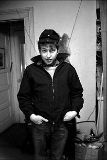
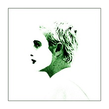
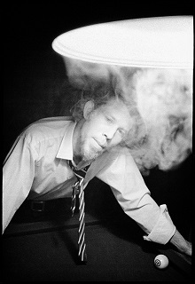
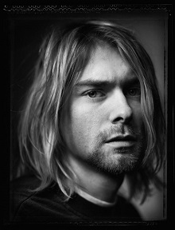

Copyright © Govinda Gallery 2015. Web design by Anna Jacoby.
EXHIBITIONS
Click an option to learn more about museum and gallery exhibitions organized and curated by Govinda Gallery since 1975.

Bob Dylan NYC 1961-1964
Photographs by Ted Russell
October 2015-June 2016
There was no apparent reason to photograph Bob Dylan in 1961, apart from an ambitious freelance photographer wanting to get another story to pitch to a magazine. It is one of the reasons Ted Russell’s photographs are so rare. They offer a genuinely candid look at the young singer and guitar player. The images from his first photographs of Dylan performing at Gerde’s Folk City at the start of his remarkable career capture the spark in Dylan’s eyes. In Russell’s photographs, as in Dylan’s music, we can see...
Read more

SapphoFest 2015
Sapphographs by Donovan
December 11, 2015-March 31, 2016
Large-scale pigment prints on archival paper on exhibit in the main hall of the library of Harvard University’s Center for Hellenic Studies. Inspired by the lyric poetry of Sappho (7th Century B.C.E.), Donovan captures in visual form the mythic beauty of this ancient artistic tradition. Donovan’s Sapphographs evoke the aesthetic sensuality of nature and the power of it’s rituals to inspire artistic creation...
Read more

Tom Waits
Photographs by Scott Smith
May 29-June 15, 2015
Govinda Gallery is pleased to present Scott Smith’s photographs of Tom Waits at Mr Musichead Gallery in Los Angeles May 29-June 15, 2015. There will be a reception for the artist at the exhibit opening Friday, May 29, 7:00 p.m.-10:00 p.m. In 1974 Scott Smith was a young photographer living in San Diego, when he was introduced by a mutual friend to Tom Waits. Both Waits and Smith had a passion for music and they soon became friends. Smith’s compelling black and white photographs of Waits...
Read more

Sound and Vision: Monumental Rock and Roll Photography
Benson | Brodsky | Clinch | Feinstein | Gassian | Gorman | Kane | Kramer | Mankowitz | Mannion | Marshall | Rock | Seliger | Simon | Smith | Stefanko | Vollmer | Waterman | Wertheimer
Exhibited in 2012 | Currently available for booking
This exhibition examines the crucial connection between visual image and rock music. Organized by guest curator Christopher Murray of Govinda Gallery and the Columbus Museum, Sound and Vision presents an extraordinary look at the intersection between popular music and great photography. This exhibition presents forty stunning large-scale prints of many of the most notable musicians, songwriters, and performers of...